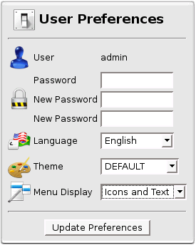

User Preferences
User Preferences
Here you can set your User Preferences.

User Preferences Box
You can change your Password  , your Language
, your Language  , your Theme
, your Theme  and the way your Menu looks.
and the way your Menu looks.
If your language is not supported, feel free to contribute !
If you want to improve Themes, you can contribute as well !
More information in Contribution page.